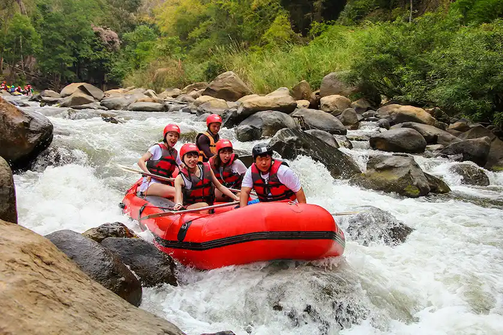
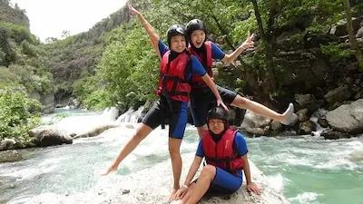
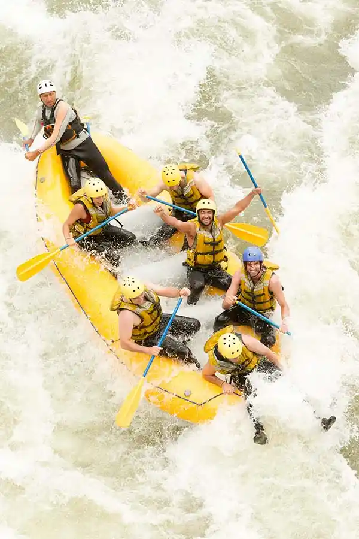

Our mission is to deliver thrilling, safe white water adventures while protecting our rivers and creating unforgettable outdoor experiences for every guest.


White Water Rafting
History
Founded in 2010 on the banks of the Clearwater River, White Water Rafting Company began as a small family business with three rafts and a passion for adventure. Early trips for locals built its reputation for thrilling, well-guided journeys rooted in safety and respect for the river.
Over time, the company expanded into multi-day expeditions and group retreats, welcoming beginners and experts alike. By investing in guide training and eco-friendly practices, Cascade Crest grew into a trusted name, blending excitement, professionalism, and environmental care.